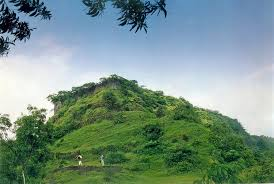
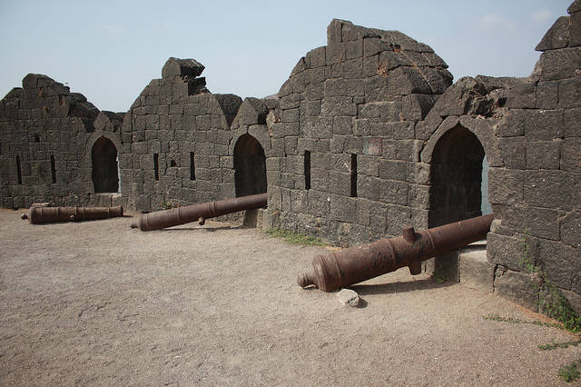

आवचित किल्ला
Location : Click Here For Google Map
- माहिती
- आवचित किल्ला महाराष्ट्र राज्याच्या रायगड जिल्ह्यात स्थित एक ऐतिहासिक किल्ला आहे. हा किल्ला डोंगरांच्या उंचावर वसलेला आहे आणि त्याचे वातावरण शांत आणि निसर्गसंपन्न आहे. किल्ल्याच्या उंच शिखरावरून सर्व आसपासचा परिसर आणि डोंगरांची दृश्ये स्पष्टपणे दिसतात.
किल्ल्याच्या स्थापत्य रचनात भक्कम तटबंदी, बुरुज आणि दरवाजे आहेत. किल्ला समुद्रापासून लांब असला तरी त्याच्या महत्त्वामुळे तो एक महत्त्वाचा ऐतिहासिक स्थान बनला आहे. अवचित किल्ल्याचा उपयोग छत्रपती शिवाजी महाराजांच्या काळात संरक्षणासाठी केला जात होता. किल्ल्याचे दर्शन घेणे आणि त्याच्या ऐतिहासिक महत्त्वाची माहिती मिळवणे एक अद्वितीय अनुभव आहे.
अवचित किल्ल्याच्या शिखरावर चढून, पर्यटक किल्ल्याचे ऐतिहासिक सौंदर्य आणि निसर्ग सौंदर्य पाहू शकतात. किल्ल्याच्या आसपास असलेले डोंगर आणि नद्या या ठिकाणी येणाऱ्या पर्यटकीय आकर्षणांची चांगली संधी देते.
Explore the historical beauty

